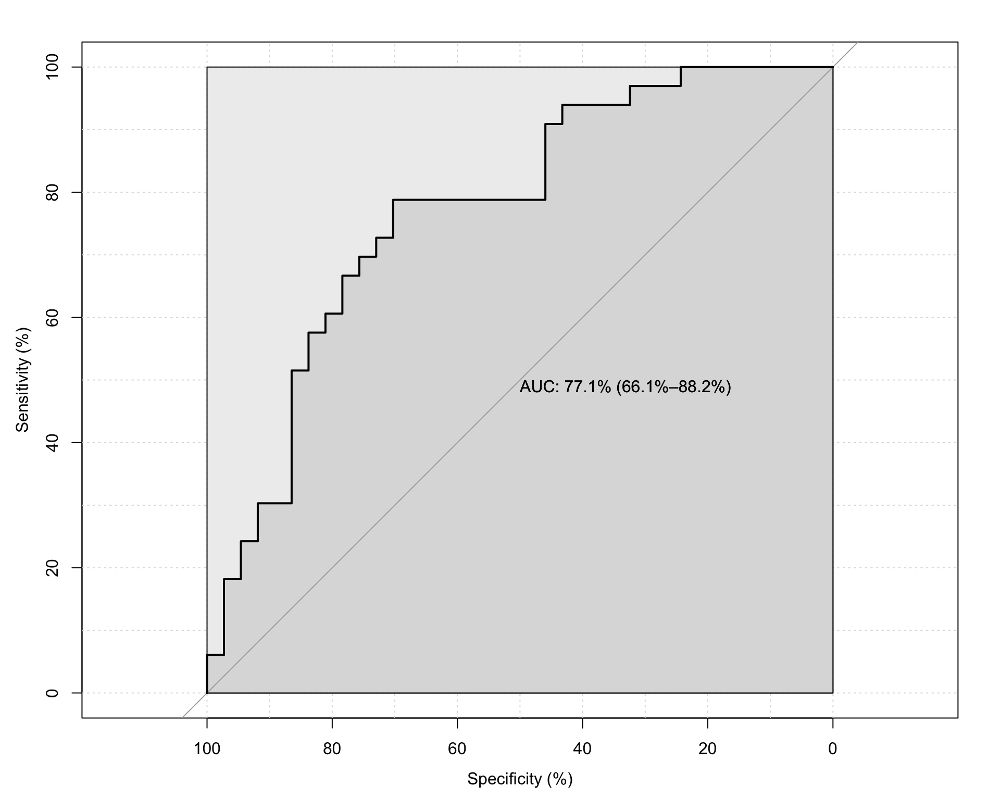

── Column specification ────────────────────────────────────────────────────────
cols(
`"Group"` = col_character(),
`"ID"` = col_character(),
`"Inducer"` = col_character(),
`"X"` = col_double(),
`"Y"` = col_double(),
`"Cond"` = col_character()
)Reproduce results
Analysis:
Here I focus on reproducing these results:
Rothen (Rothen et al. 2016)
Ward (Ward, n.d.) from: https://osf.io/p5xsd/files/osfstorage
Root (Root et al. 2021)
Van Petersen (Van Petersen et al. 2020)
Rothen 2016
This is what we aim to replicate (Rothen et al. 2016):

Area (\(pixel^2\)):
Definition: Calculating consistency Each stimulus is represented by three xy coordinates - (x1, y1), (x2, y2), (x3, y3) - from the three repetitions. For each stimulus, the area of the triangle bounded by the coordinates is calculated as follows:
\(Area = (x1y2 + x2y3 + x3y1 – x1y3 – x2y1 – x3y2) / 2\)
`summarise()` has grouped output by 'ID'. You can override using the `.groups`
argument.
Setting levels: control = Ctl, case = Syn
Setting direction: controls > cases
| Feature | AUC | threshold | sensitivity | specificity | ppv | npv | ci_low | ci_high |
|---|---|---|---|---|---|---|---|---|
| triangle_area_GA | 74.611 | 1574.552 | 84.84848 | 70.27027 | 71.79487 | 83.87097 | 62.44444 | 86.77751 |
| group | n | Mean | SD |
|---|---|---|---|
| Ctl | 37 | 7030.922 | 11303.051 |
| Syn | 33 | 1311.875 | 1828.799 |
| Ctl | Syn | |
|---|---|---|
| Ctl | 26 (70.3%) | 11 (29.7%) |
| Syn | 5 (15.2%) | 28 (84.8%) |
Maximum length (\(pixel\)):
`summarise()` has grouped output by 'ID'. You can override using the `.groups`
argument.
Setting levels: control = Ctl, case = Syn
Setting direction: controls > cases
| Feature | AUC | threshold | sensitivity | specificity | ppv | npv | ci_low | ci_high |
|---|---|---|---|---|---|---|---|---|
| triangle_maxLen_GA | 77.1499 | 108.6739 | 78.78788 | 70.27027 | 70.27027 | 78.78788 | 66.0695 | 88.23026 |
| group | n | Mean | SD |
|---|---|---|---|
| Ctl | 37 | 194.17590 | 131.86123 |
| Syn | 33 | 96.00616 | 48.50826 |
| Ctl | Syn | |
|---|---|---|
| Ctl | 26 (70.3%) | 11 (29.7%) |
| Syn | 7 (21.2%) | 26 (78.8%) |
Perimeter (\(pixel\)):
`summarise()` has grouped output by 'ID'. You can override using the `.groups`
argument.
Setting levels: control = Ctl, case = Syn
Setting direction: controls > cases
| Feature | AUC | threshold | sensitivity | specificity | ppv | npv | ci_low | ci_high |
|---|---|---|---|---|---|---|---|---|
| triangle_perim_GA | 77.6413 | 233.8503 | 78.78788 | 70.27027 | 70.27027 | 78.78788 | 66.70604 | 88.57651 |
| group | n | Mean | SD |
|---|---|---|---|
| Ctl | 37 | 414.9348 | 287.96720 |
| Syn | 33 | 200.9364 | 99.35026 |
| Ctl | Syn | |
|---|---|---|
| Ctl | 26 (70.3%) | 11 (29.7%) |
| Syn | 7 (21.2%) | 26 (78.8%) |
Comparison
Summary Rothen vs Repro
| Descriptive | DP | AUC | Mean (syn) | Mean (con) | SD (syn) | SD (con) | Sensitivity | Specificity | Cut-off | |
|---|---|---|---|---|---|---|---|---|---|---|
| Rothen | Area | 1.57 | 0.76 | 1079 | 7031 | 1365 | 11149 | 88 | 70 | 1,596 |
| Repro | 0.75 | 1312 | 7031 | 1829 | 11303 | 85 | 70 | 1,575 | ||
| Rothen | Max. length | 1.20 | 0.77 | 96 | 194 | 42 | 130 | 79 | 70 | 110 |
| Repro | 0.77 | 96 | 194 | 49 | 132 | 79 | 70 | 109 | ||
| Rothen | Perimeter (Euclidean sum) | 1.18 | 0.77 | 202 | 415 | 87 | 284 | 76 | 73 | 221 |
| Repro | 0.78 | 201 | 415 | 99 | 288 | 79 | 70 | 234 | ||
| Nearest neighbor | 0.93 | 0.76 | 66 | 42 | 21 | 22 | 67 | 73 | 56 |
Original table:
Summary Statistics Table
| Descriptive | DP | AUC | Mean (syn) | Mean (con) | SD (syn) | SD (con) | Sensitivity | Specificity | Cut-off | N syn / con |
|---|---|---|---|---|---|---|---|---|---|---|
| Area | 1.57 | 0.76 | 1079 | 7031 | 1365 | 11149 | 88 | 70 | 1,596 | 33 / 37 |
| Max. length | 1.20 | 0.77 | 96 | 194 | 42 | 130 | 79 | 70 | 110 | 33 / 37 |
| Perimeter (Euclidean sum) | 1.18 | 0.77 | 202 | 415 | 87 | 284 | 76 | 73 | 221 | 33 / 37 |
| Nearest neighbor | 0.93 | 0.76 | 66 | 42 | 21 | 22 | 67 | 73 | 56 | 33 / 37 |
| Area | 1.84 | 0.85 | 1164 | 8085 | 1403 | 11641 | 87 | 81 | 1,596 | 30 / 32 |
| Perimeter (Euclidean sum) | 1.46 | 0.82 | 207 | 453 | 90 | 287 | 77 | 81 | 236 | 30 / 32 |
| Max. length | 1.46 | 0.82 | 98 | 211 | 44 | 132 | 77 | 81 | 110 | 30 / 32 |
| Nearest neighbor | 1.08 | 0.79 | 66 | 40 | 21 | 22 | 67 | 78 | 55 | 30 / 32 |
Reproduced table:
| group | n | Mean | SD | group | n | Mean | SD | Feature | AUC | threshold | sensitivity | specificity | ppv | npv | ci_low | ci_high |
|---|---|---|---|---|---|---|---|---|---|---|---|---|---|---|---|---|
| 2 | 33 | 1311.875 | 1828.799 | 1 | 37 | 7030.922 | 11303.05 | triangle_area_GA | 74.611 | 1574.552 | 84.84848 | 70.27027 | 71.79487 | 83.87097 | 62.44444 | 86.77751 |
| 2 | 33 | 96.00616 | 48.50826 | 1 | 37 | 194.1759 | 131.8612 | triangle_maxLen_GA | 77.1499 | 108.6739 | 78.78788 | 70.27027 | 70.27027 | 78.78788 | 66.0695 | 88.23026 |
| 2 | 33 | 200.9364 | 99.35026 | 1 | 37 | 414.9348 | 287.9672 | triangle_perim_GA | 77.6413 | 233.8503 | 78.78788 | 70.27027 | 70.27027 | 78.78788 | 66.70604 | 88.57651 |
Area $zs$
`summarise()` has grouped output by 'ID'. You can override using the `.groups`
argument.
Setting levels: control = Ctl, case = Syn
Setting direction: controls > cases
| Feature | AUC | threshold | sensitivity | specificity | ppv | npv | ci_low | ci_high |
|---|---|---|---|---|---|---|---|---|
| triangle_area_GA_zs | 81.5725 | 0.076886 | 81.81818 | 78.37838 | 77.14286 | 82.85714 | 71.01422 | 92.13074 |
| group | n | Mean | SD |
|---|---|---|---|
| Ctl | 37 | 0.2263572 | 0.2525547 |
| Syn | 33 | 0.0472247 | 0.0576979 |
| Ctl | Syn | |
|---|---|---|
| Ctl | 29 (78.4%) | 8 (21.6%) |
| Syn | 6 (18.2%) | 27 (81.8%) |
System info:
R version 4.5.1 (2025-06-13)
Platform: aarch64-apple-darwin20
Running under: macOS Tahoe 26.0
Matrix products: default
BLAS: /Library/Frameworks/R.framework/Versions/4.5-arm64/Resources/lib/libRblas.0.dylib
LAPACK: /Library/Frameworks/R.framework/Versions/4.5-arm64/Resources/lib/libRlapack.dylib; LAPACK version 3.12.1
locale:
[1] en_US.UTF-8/en_US.UTF-8/en_US.UTF-8/C/en_US.UTF-8/en_US.UTF-8
time zone: Europe/Zurich
tzcode source: internal
attached base packages:
[1] stats graphics grDevices utils datasets methods base
other attached packages:
[1] pROC_1.19.0.1 papaja_0.1.3 tinylabels_0.2.5 dplyr_1.1.4
[5] tidyr_1.3.1 readxl_1.4.5 readr_2.1.5
loaded via a namespace (and not attached):
[1] crayon_1.5.3 vctrs_0.6.5 cli_3.6.5 knitr_1.50
[5] rlang_1.1.6 xfun_0.52 purrr_1.1.0 generics_0.1.4
[9] jsonlite_2.0.0 glue_1.8.0 htmltools_0.5.8.1 hms_1.1.3
[13] rmarkdown_2.29 cellranger_1.1.0 evaluate_1.0.3 tibble_3.3.0
[17] tzdb_0.5.0 fastmap_1.2.0 yaml_2.3.10 lifecycle_1.0.4
[21] compiler_4.5.1 Rcpp_1.0.14 htmlwidgets_1.6.4 pkgconfig_2.0.3
[25] rstudioapi_0.17.1 digest_0.6.37 R6_2.6.1 tidyselect_1.2.1
[29] pillar_1.10.2 magrittr_2.0.3 tools_4.5.1 References
Root, Nicholas, Michiko Asano, Helena Melero, Chai-Youn Kim, Anton V. Sidoroff-Dorso, Argiro Vatakis, Kazuhiko Yokosawa, Vilayanur Ramachandran, and Romke Rouw. 2021. “Do the Colors of Your Letters Depend on Your Language? Language-Dependent and Universal Influences on Grapheme-Color Synesthesia in Seven Languages.” Consciousness and Cognition 95 (October): 103192. https://doi.org/10.1016/j.concog.2021.103192.
Rothen, Nicolas, Kristin Jünemann, Andy D. Mealor, Vera Burckhardt, and Jamie Ward. 2016. “The Sensitivity and Specificity of a Diagnostic Test of Sequence-Space Synesthesia.” Behavior Research Methods 48 (4): 1476–81. https://doi.org/10.3758/s13428-015-0656-2.
Van Petersen, Eline, Mareike Altgassen, Rob Van Lier, and Tessa M. Van Leeuwen. 2020. “Enhanced Spatial Navigation Skills in Sequence-Space Synesthetes.” Cortex 130 (September): 49–63. https://doi.org/10.1016/j.cortex.2020.04.034.
Ward, Jamie. n.d. “Optimizing a Measure of Consistency for Sequence-Space Synaesthesia.” https://doi.org/10.31234/osf.io/5cnr7.